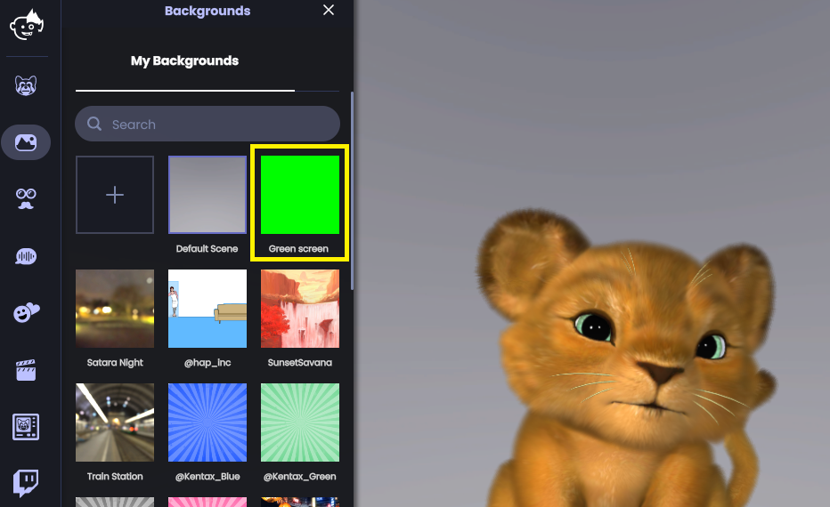
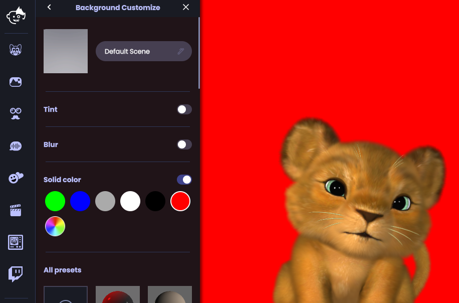
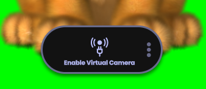
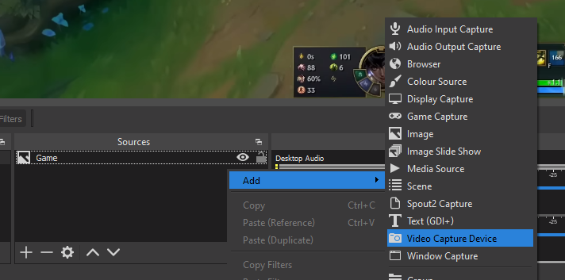
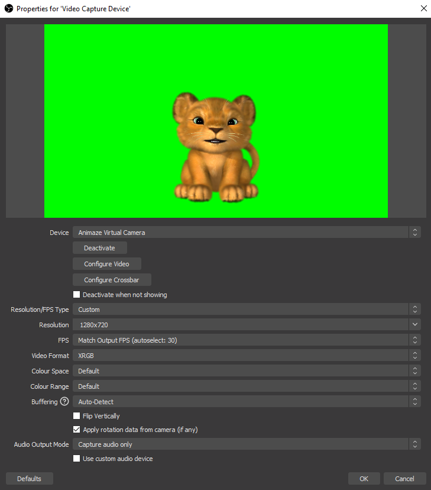
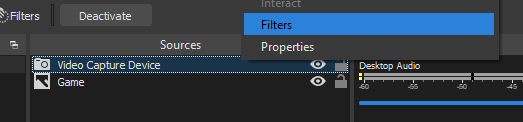
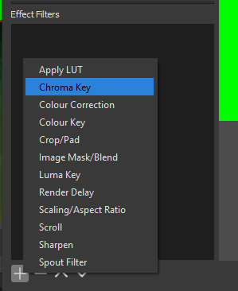
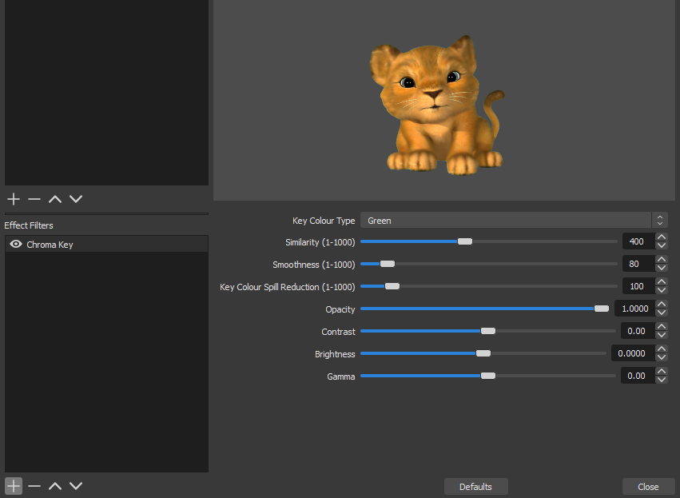
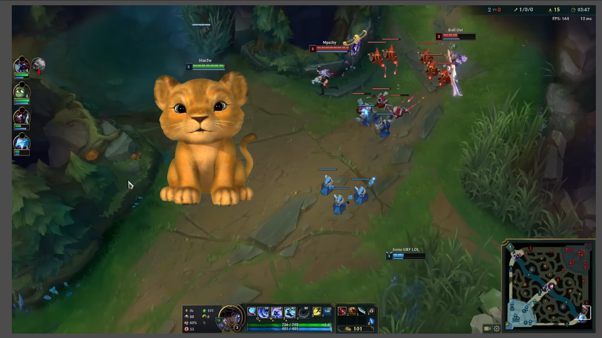
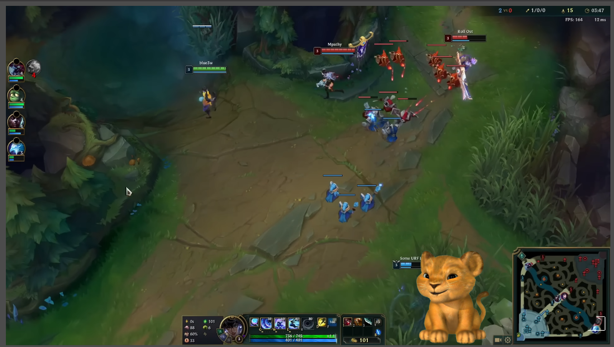

Chroma Key w/ OBS Video Capture Device (no subscription needed)
We’ll use the Animaze Virtual Camera as a Video Capture Device source (i.e. webcam source) in OBS. We’ll set the background to an unused color such as pure green and crop the green pixels using the Chroma Key filter in OBS.
This section assumes that the Animaze Virtual Camera has been properly installed on the system (part of the Animaze installation process) and assumes knowledge about using it as a webcam in other software. If not, follow these guides/faqs:
Steps
(in Animaze) Let’s change the background to a greenscreen by opening the Backgrounds gallery and selecting the Green Screen backgrounds.

(optional) (in Animaze) If the pure green is not the color you want to crop out, you can choose another one. You can change any background into a solid color one by clicking on the background in the gallery and toggling the Solid Color option as you customize the background.

(in Animaze) Click on Enable Virtual Camera - this will start broadcasting the rendered scene (avatar+background) to the Animaze Virtual Camera

(in OBS) In the Sources section, right-click> Add and click on Video Capture Device. You will be prompted with a Properties dialog.

(in OBS) In the Properties dialog select Animaze Virtual Camera for the Device option in the Video Capture Device options dialog, leave everything else as default, and click Ok.

(in OBS) Right-click on the Video Capture Device in the Sources section and then click the Filters button from the context menu.

(in OBS) In the Filters dialog, add a Chroma Key filter

(in OBS) Adjust the Chroma Key filter to remove the background. Note that the Key Colour Type should be set to Green. Depending on the avatar design you may want to use other Key Color Types and change the filter options to suit your needs.

(in OBS) Now it’s time to reposition the avatar feed

Done and dusted!
